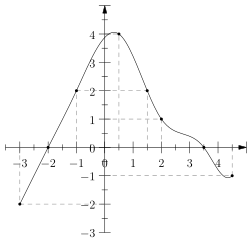
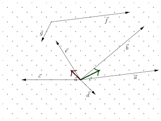

Contrôle – 25 janvier 2023 – seconde 1
noté sur \(15\) points
Exercice 1 – \(3\) points
Julien est déterminé à s'entraîner à la course. Il se propose d'augmenter tous les mois de \(10\%\) la longueur de ses parcours.
Le cinquième mois, il parcourt \(15\) km.
Justifiez vos réponses, en arrondissant à la centaine de mètres près :
- (1) Quelle est la distance d'entraînement de Julien le sixième mois ?
- (1) Quelle est la distance d'entraînement du Julien le quatrième mois ?
- (1) À partir de quel mois la distance d'entraînement de Julien est-elle plus grande que \(30\) km ?
Exercice 2 – \(5\) points
On considère une fonction \(f\) dont l'intégralité de la courbe est donnée dans la figure ci-contre.
Par lecture graphique, répondez à ces questions :
- (0,5) Quelle est l'image par \(f\) de \(x = 0,5\) ?
- (0,5) Quels sont les antécédents de \(y=0\) par la fonction \(f\) ?
- (1) Quel est l'intervalle de définition de cette fonction ?
- (2) Donner le tableau de signe de cette fonction.
- (1) Peut-on dire que \(f(-1,5) < f(4)\) ? Justifiez votre réponse.

Exercice 3 – \(4\) points
Vous pouvez laisser des traces de constructions dans la figure pour vous aider à répondre aux questions de cet exercice.

- (2) Donnez les coordonnées et la décomposition de chaque vecteurs dans la base \((\vec{u}, \vec{v})\).
- (1) Quelles sont les coordonnées du vecteur \(\vec{z} = \vec{g} + \vec{f}\) ?
- (1) Quelles sont les coordonnées du vecteur \(2\vec{a}\) ?
Exercice 4 – \(3\) points
- (2) Donner le tableau de signe de la fonction \(f(x) = -4x + 2\). Vous justifierez le plus possible votre réponse.
- (1) En déduire les solutions de l'inéquation \(-4x+2> 0\)
Exercice 5 bonus – jusqu'à \(2\) points bonus
- À partir d'une identité remarquable bien choisie, et en connaissant le signe d'un nombre élevé au carré, montrer que, quelque soit \(a, b\) deux réels on a toujours : \[ ab \leq \frac{a^2 + b^2}{2} \]
- Dans quel cas \(ab = \frac{a^2 + b^2}{2}\) ? Donner un exemple en choisissant des valeurs de \(a\) et de \(b\).